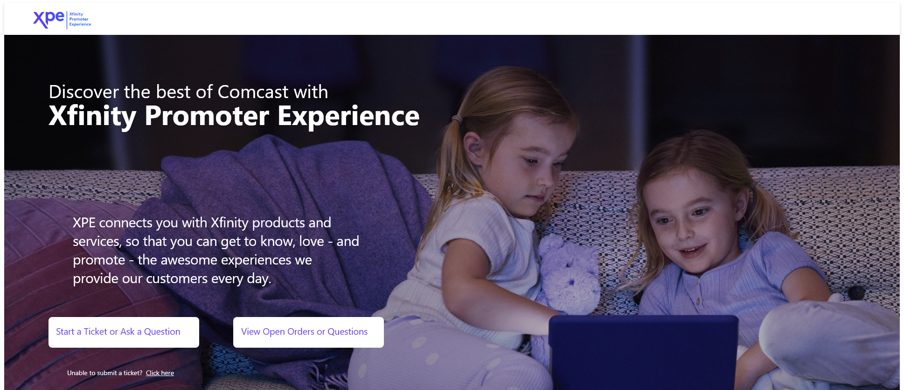
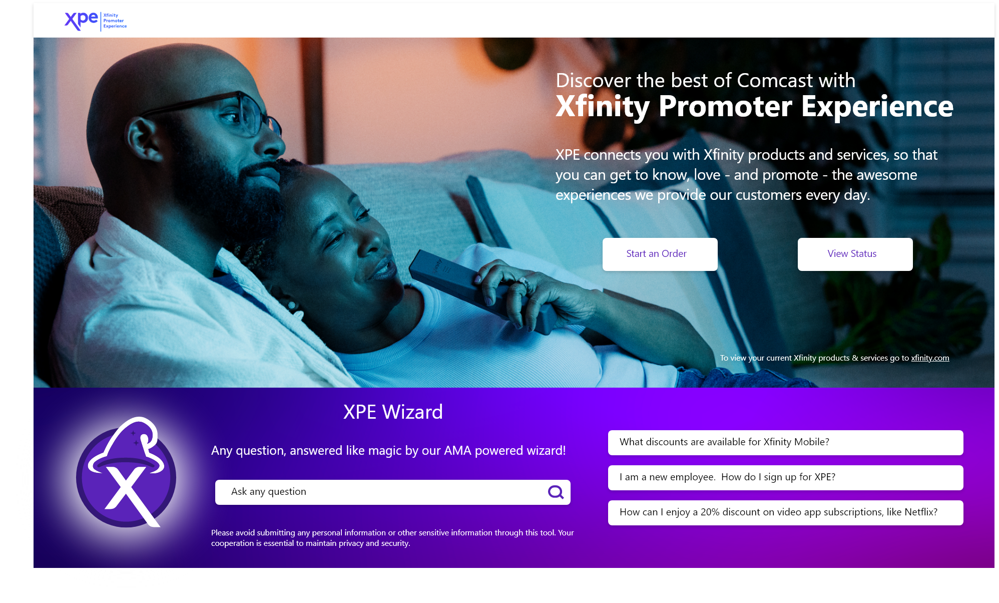
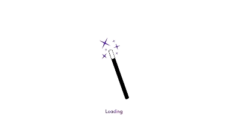

Increased search events 194%
Who: Technology Organization at Comcast
What: UX, UI design, implementation of generative AI
Result: Increased searches by 194% over one year
Project Summary
We created a developer specific search engine to ensure developers could easily find the relevant information they were searching for. This meant indexing more sites than those used by the existing company intranet search site and using more dynamic filtering for the returned results. After the success of our Beta launch, we received so many requests about how to be included in the search results that we added the process to our FAQ page. This search engine was also the first project I worked on that incorporated generative AI and would serve as the template for future generative AI projects.
The Problem: Developers were left searching in the dark
The company intranet was optimized for general employee needs - HR content, corporate announcements, etc. Developer specific sources like Confluence pages were buried or not indexed, making it hard to locate technical resources. Developers resorted to sharing links manually or bookmarking personal resources.
Fast Track to Relevant Information
Developers had to sift through scattered SharePoint sites and buried content, often relying on bookmarks or shared links to find what they needed.
With the introduction of a developer specific search engine more relevant sources were able to be indexed and filtered to get developers the answers they needed in less clicks. Dynamic filters allowed developers to view results by source and content type reducing time spent searching.
We also wanted to ensure the search experience was similar to other large search engines that users were already accustomed to using. This meant showing search history as you typed your query in the search box, having the ability to hit enter to start the search as well as clicking the search icon and viewing results by relevance. We also ensured the search engine was optimized for use on mobile.
My Role
I led the UX and UI redesign using Adobe XD to prototype new flows and layouts. I collaborated closely with engineers to implement React-based filtering, optimized the mobile experience and helped shape the generative AI query integration. I also participated in daily stand-ups and sprint planning using Jira, helping guide the product from Beta to full release.
Design Enhancements I led
- AI response with cited sources and feedback option
- Lines between results
- Visible URLs
- Enhanced filters
- Decluttered layout
- VPN tags
- Mobile design


Outcome Statement
The creation of a developer specific search tool led to an increase of search events by 194% over the course of one year. Devs no longer had to rely on a company focused intranet site. The developer specific search site indexed a broader range of sources, all curated specifically for developer needs. The AI component summarized relevant documents and highlighted key insights with citations, reducing time to information and increasing user trust.
Reflection
Being a technology organization populated by software engineers led to a greater understanding of what should be returned when searching for information. We were able to work with the appropriate teams to ensure their valuable data could be indexed, promoted and returned in our search results.
Decreased ticket submission 30% with Generative AI
Who: XPE Organization at Comcast
What: New data ingest, implementation of generative AI, UX/UI redesign
Result: 30% decrease in tickets submitted to XPE team
Project Summary
We designed a generative AI widget section featuring an open search and three clickable FAQs to guide users. The results page included cites sources, a feedback option and an open search bar as well as FAQ prompts that could be selected to continue asking questions.
Before: Employees searched the intranet or submitted tickets to get help, often waiting days for responses.
After: A generative AI widget provided instant answers, with clickable FAQs, open search, citations and a feedback loop which significantly reduced helpdesk burden.

User Need: Immediate Answers to Questions
The target users were company employees who had questions related to their discounted products and services, including but not limited to, how to sign-up for those services or how to change those services.
The XPE Wizard allowed for a self-service approach, allowing employees to ask questions instead of having to open a ticket or search the intranet. Success criteria was determined by citation clicks, feedback provided per returned result and if the Wizard was able to return a result.

My Role: UX/UI Designer & Project Manager
As the PM I coordinated across four teams to ensure timely delivery, built the project plan and ran weekly cross-functional syncs to monitor progress. As the UX/UI designer I collaborated with stakeholders to define requirements, designed the widget and results interface and created a custom loader animation for the response flow.
I conducted competitive analysis of AI chat interfaces (Copilot, ChatGPT, Bard) to identify common interaction patterns. This research informed our decision to feature prominent FAQs and a scrollable conversation view to align with user expectations.
The Mandate: Reduce Ticket Volume
Our business partners were under pressure to improve SLA and reduce the high volume of tickets submitted for common questions.
We faced several technical and UX challenges:
- Authentication: We resolved a fragmented authentication experience across companies by implementing SAT tokens, avoiding the need for duplicate email entry and streamlining the login flow.
- Data Ingest:Initially using three databases, we consolidated to a single source. This improved result accuracy and allowed the business team to easily update service and policy information
- Contextual Responses:Articles were tagged to trigger expanded information on specific products, enhancing results and creating a more “promoter-level” experience.

We also waited for the release of key AI features before launching:
- Hybrid Search for better keyword recognition
- Additional guardrails that ensured answers came only from validated sources and not general AI knowledge
Outcome & Reflection
Through strategic planning, continuous collaboration and iterative design we delivered a solution we were all proud of - from kickoff to launch in just five months. User feedback indicated that the AI experience was faster and easier to use.
This project helped me grow as both a designer and project manager. I deepened my understanding of AI powered interactions and learned how to simplify complex backend process for seamless user experiences.
Established UX Principles to Improve Products
Who: Technology Organization at Comcast
What: UX research
Result: UX principles created for organization
Project Summary
I was part of a five person pillar group focused on creating UX principles for our organization to have as a reference when starting projects. We met with our largest vendors to understand what their approaches to UX were. We also did a case study on an internal help desk that had just been relaunched as a way to show how UX principles are often overlooked, but very important to the overall success of an application.
The Challenge: Establishing UX as a requirement
Our executive leaders were seeing a pattern: design efforts were focusing heavily on visual polish, but often neglecting how users actually interacted with our products. UX was being treated as an afterthought. This became especially clear after the relaunch of our internal help desk platform—one that received 1,600 pieces of feedback within two months, with over half expressing frustration around usability.
Key Insight: 52% of all feedback cited UX related issues like confusing ticket categories, unclear form labels and an overall lack of status updates.
Leadership recognized this as an opportunity to create an organizational shift: establish clear, research-backed UX principles to guide every project from the start.
My Role
As one of three UX researchers on a five-person team, I led both internal and vendor-facing research efforts:
- Designed and conducted 50 user interviews based on feedback themes
- Co-created vendor interview questions and facilitated all external sessions
- Synthesized and categorized over 1,600 pieces of user feedback
- Wrote the first draft of the UX principles document based on all insights
Our Process
Quantitative Feedback Review
First we looked at two months of feedback for the newly relaunched platform, which consisted of 1600 responses. I broke down the feedback into four categories:
- Platform specific (web, phone, chat)
- Equipment (including software) & access
- Compliments - both agents and site
- Other - not easily categorized
The highest percentage of negative feedback, 52%, was related to the platform. With equipment & access and other both coming in at 11% and compliments making up the remaining 26%.
We drilled into the platform complaints and found recurring usability problems:
- Confusion around ticket type selection
- Unclear form labels and CTAs
- Lack of ticket progress visibility or SLAs
Qualitative User Interviews
We interviewed 50 employees who had submitted feedback to learn more. Sample questions included:
- What problems did you experience with the help desk?
- Was the platform intuitive to navigate?
- What would improve your experience?
After our interviews with end users had concluded we each answered the same four questions:
- What are the biggest Process opportunity areas?
- What are the biggest Technology opportunity areas?
- What are the 3 top themes you noticed in the data?
- What are quick win opportunities we can address now?
Those answers helped us to identify quick wins for the platform that included relabeling CTAs and form entry labels, fixing broken links, navigation tips, ability to minimize extremely large alert banners and ability to rate articles as well as provide feedback.
Vendor Research
We also interviewed key internal and external vendors to understand how other teams approached UX. Common themes included:
- Centralized support hubs
- Shallow click depth
- Personalized interface
- Predictable, proactive communication
The Outcome
We synthesized our research and collaboratively developed five UX principles that now guide all new internal projects.
- Provide precise and tailored user experiences
- Foster intuitive usage, minimizing errors
- Proactively identify and prevent mistakes
- Cultivate trust by ensuring reliability
- Establish clear expectations and embrace feedback
These principles help ensure UX is not an afterthought, but a core part of every project timeline.
Impact & Reflection
The five UX principles helped shift the organization’s mindset towards user-first design and continuous feedback.
This project reinforced that UX strategy isn't just about improving one product, it’s about influencing how an organization thinks. By grounding our principles in real user and vendor research, we ensured they were actionable, meaningful and scalable.